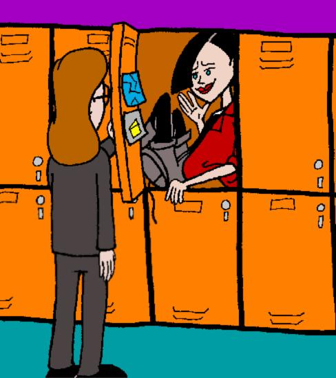

Fan Fiction
Artwork Based on Elizabeth Thaler's
All's Weird That Ends Weird
Fan Fiction
Artwork Based on Elizabeth Thaler's
All's Weird That Ends Weird
|
 By John Berry (berry@adelphia.net) Daria gets the distinct impression that Jane has stage fright. It's just a hunch, of course... |